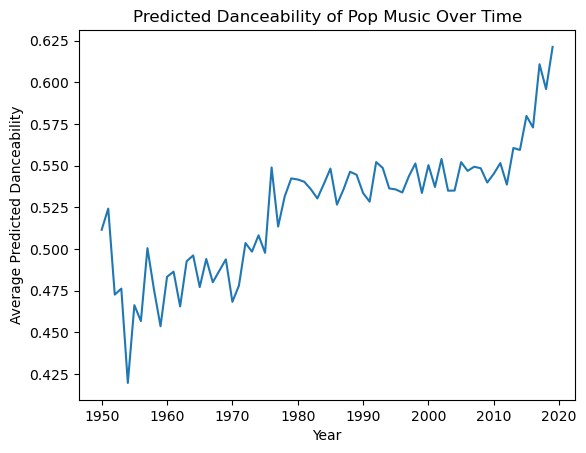
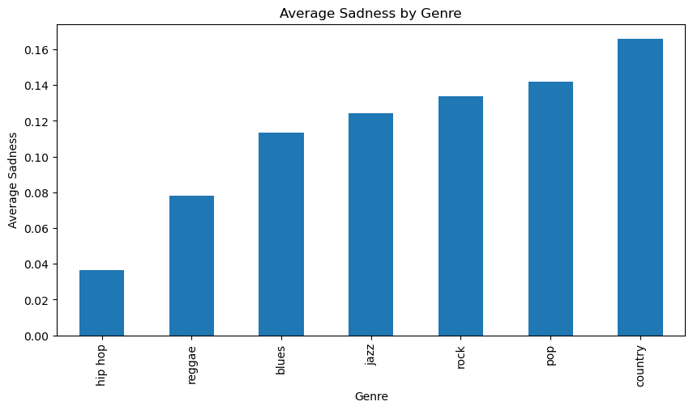
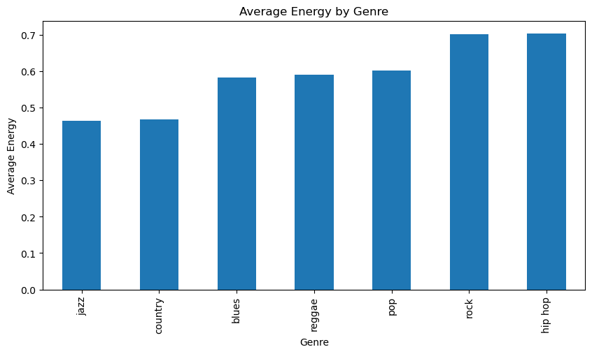

import pandas as pd
url = "https://raw.githubusercontent.com/PhilChodrow/PIC16B/master/datasets/tcc_ceds_music.csv"
df = pd.read_csv(url)Blog Post 11: Deep Music Genre Classification
Well, I’ve been hoping to do a deep learning blog post all semester, so I’m really excited to give this one a shot! The first step will be to properly format the data, and then perform text vectorization, since lyrics are words, which cannot function as features. Then, I will collate batches. Finally, I will be prepared to create a model and evaluate its accuracy. I will create 3 models, one learning from just the lyrics, one learning from just the features, and one learning from both. Once the models have successfully performed better than the base rate, I will compare the accuracy across the three models to see which one would be the most promising to continue to work with.
df.head()| Unnamed: 0 | artist_name | track_name | release_date | genre | lyrics | len | dating | violence | world/life | ... | sadness | feelings | danceability | loudness | acousticness | instrumentalness | valence | energy | topic | age | |
|---|---|---|---|---|---|---|---|---|---|---|---|---|---|---|---|---|---|---|---|---|---|
| 0 | 0 | mukesh | mohabbat bhi jhoothi | 1950 | pop | hold time feel break feel untrue convince spea... | 95 | 0.000598 | 0.063746 | 0.000598 | ... | 0.380299 | 0.117175 | 0.357739 | 0.454119 | 0.997992 | 0.901822 | 0.339448 | 0.137110 | sadness | 1.0 |
| 1 | 4 | frankie laine | i believe | 1950 | pop | believe drop rain fall grow believe darkest ni... | 51 | 0.035537 | 0.096777 | 0.443435 | ... | 0.001284 | 0.001284 | 0.331745 | 0.647540 | 0.954819 | 0.000002 | 0.325021 | 0.263240 | world/life | 1.0 |
| 2 | 6 | johnnie ray | cry | 1950 | pop | sweetheart send letter goodbye secret feel bet... | 24 | 0.002770 | 0.002770 | 0.002770 | ... | 0.002770 | 0.225422 | 0.456298 | 0.585288 | 0.840361 | 0.000000 | 0.351814 | 0.139112 | music | 1.0 |
| 3 | 10 | pérez prado | patricia | 1950 | pop | kiss lips want stroll charm mambo chacha merin... | 54 | 0.048249 | 0.001548 | 0.001548 | ... | 0.225889 | 0.001548 | 0.686992 | 0.744404 | 0.083935 | 0.199393 | 0.775350 | 0.743736 | romantic | 1.0 |
| 4 | 12 | giorgos papadopoulos | apopse eida oneiro | 1950 | pop | till darling till matter know till dream live ... | 48 | 0.001350 | 0.001350 | 0.417772 | ... | 0.068800 | 0.001350 | 0.291671 | 0.646489 | 0.975904 | 0.000246 | 0.597073 | 0.394375 | romantic | 1.0 |
5 rows × 31 columns
engineered_features = ['dating', 'violence', 'world/life', 'night/time','shake the audience','family/gospel', 'romantic', 'communication','obscene', 'music', 'movement/places', 'light/visual perceptions','family/spiritual', 'like/girls', 'sadness', 'feelings', 'danceability','loudness', 'acousticness', 'instrumentalness', 'valence', 'energy'] As our target variable, I’ll be converting the genre column into numbers so that a neural net can deal with it.
print(df["genre"].unique())
genres = {'pop': 0, 'country': 1, 'blues': 2, 'jazz': 3, 'reggae': 4, 'rock': 5, 'hip hop': 6}
df["genre"] = df["genre"].apply(genres.get)
# check to make sure all the genres were successfully converted to numbers
print(df["genre"].unique())
df.head(3)['pop' 'country' 'blues' 'jazz' 'reggae' 'rock' 'hip hop']
[0 1 2 3 4 5 6]| Unnamed: 0 | artist_name | track_name | release_date | genre | lyrics | len | dating | violence | world/life | ... | sadness | feelings | danceability | loudness | acousticness | instrumentalness | valence | energy | topic | age | |
|---|---|---|---|---|---|---|---|---|---|---|---|---|---|---|---|---|---|---|---|---|---|
| 0 | 0 | mukesh | mohabbat bhi jhoothi | 1950 | 0 | hold time feel break feel untrue convince spea... | 95 | 0.000598 | 0.063746 | 0.000598 | ... | 0.380299 | 0.117175 | 0.357739 | 0.454119 | 0.997992 | 0.901822 | 0.339448 | 0.137110 | sadness | 1.0 |
| 1 | 4 | frankie laine | i believe | 1950 | 0 | believe drop rain fall grow believe darkest ni... | 51 | 0.035537 | 0.096777 | 0.443435 | ... | 0.001284 | 0.001284 | 0.331745 | 0.647540 | 0.954819 | 0.000002 | 0.325021 | 0.263240 | world/life | 1.0 |
| 2 | 6 | johnnie ray | cry | 1950 | 0 | sweetheart send letter goodbye secret feel bet... | 24 | 0.002770 | 0.002770 | 0.002770 | ... | 0.002770 | 0.225422 | 0.456298 | 0.585288 | 0.840361 | 0.000000 | 0.351814 | 0.139112 | music | 1.0 |
3 rows × 31 columns
df.groupby("genre").size() / len(df)genre
0 0.248202
1 0.191915
2 0.162273
3 0.135521
4 0.088045
5 0.142182
6 0.031862
dtype: float64Looks like if we guess genre 0 (pop) every time, we will get a base accuracy of 24.8%. Let’s see if we an do better than this. Since we’re going to start out using just the lyrics for classification, I’m going to go ahead and vectorize those.
from torch.utils.data import Dataset, DataLoader
class TextDataFromDF(Dataset):
def __init__(self, df):
self.df = df
# returns the target, lyrics, and features separately
def __getitem__(self, index):
target = self.df['genre'].iloc[index]
lyrics = self.df['lyrics'].iloc[index]
features = self.df[engineered_features].iloc[index]
return target, lyrics, features
def __len__(self):
return len(self.df) from sklearn.model_selection import train_test_split
df_train, df_val = train_test_split(df, shuffle = True, test_size = 0.2)
train_data = TextDataFromDF(df_train)
val_data = TextDataFromDF(df_val)Here’s a sample of what one piece of data looks like:
train_data[193](4,
'ballistic affair ballistic affair lick chalice cook ital play football cricket brother true rest jungle block rema fight gainst brother right sister live yeah throw throw knife unite live fear ballistic affair true black outta east rest come best ballistic affair tell brother ballistic affair ballistic affair tell sister ballistic affair throw throw knife unite live fear ballistic affair true black outta east rest come best ballistic affair tell brother ballistic affair ballistic affair tell sister ballistic affair ballistic affair ballistic affair throw throw knife unite throw throw knife unite hear brother',
dating 0.001144
violence 0.172638
world/life 0.181385
night/time 0.001144
shake the audience 0.024042
family/gospel 0.183652
romantic 0.001144
communication 0.092167
obscene 0.331242
music 0.001144
movement/places 0.001144
light/visual perceptions 0.001144
family/spiritual 0.001144
like/girls 0.001144
sadness 0.001144
feelings 0.001144
danceability 0.893859
loudness 0.423173
acousticness 0.426706
instrumentalness 0.000052
valence 0.862943
energy 0.293271
Name: 21143, dtype: float64)from torchtext.data.utils import get_tokenizer
from torchtext.vocab import build_vocab_from_iterator
tokenizer = get_tokenizer('basic_english')
tokenized = tokenizer(train_data[193][1])def yield_tokens(data_iter):
for target, text, _ in data_iter:
yield tokenizer(text)
vocab = build_vocab_from_iterator(yield_tokens(train_data), specials=["<unk>"], min_freq = 50)
vocab.set_default_index(vocab["<unk>"])import torch
num_tokens = len(vocab.get_itos())
max_len = 30
# converts text (like lyrics!) into numbers (which a neural net can use!)
def text_pipeline(x):
tokens = vocab(tokenizer(x))
y = torch.zeros(max_len, dtype=torch.int64) + num_tokens
if len(tokens) > max_len:
tokens = tokens[0:max_len]
y[0:len(tokens)] = torch.tensor(tokens,dtype=torch.int64)
return y
label_pipeline = lambda x: int(x)import numpy as np
def collate_batch(batch):
target_label_list = []
lyric_text_list = []
features_list = []
for (_targets, _lyrics, _features) in batch:
# process targets
target_label_list.append(label_pipeline(_targets))
# process lyrics
processed_lyrics = text_pipeline(_lyrics)
lyric_text_list.append(processed_lyrics)
# process features
features_list.append(_features.to_numpy())
# turn it all into tensors
target_label_list = torch.tensor(target_label_list, dtype=(torch.int64))
lyric_text_list = torch.stack(lyric_text_list)
features_list = torch.tensor((features_list), dtype=torch.float64)
return target_label_list, lyric_text_list, features_list#train set and validation set
train_loader = DataLoader(train_data, batch_size=8, shuffle=True, collate_fn=collate_batch)
val_loader = DataLoader(val_data, batch_size=8, shuffle=True, collate_fn=collate_batch)next(iter(train_loader))C:\Users\Zoe Greenwald\AppData\Local\Temp\ipykernel_22856\3029876209.py:21: UserWarning: Creating a tensor from a list of numpy.ndarrays is extremely slow. Please consider converting the list to a single numpy.ndarray with numpy.array() before converting to a tensor. (Triggered internally at C:\cb\pytorch_1000000000000\work\torch\csrc\utils\tensor_new.cpp:278.)
features_list = torch.tensor((features_list), dtype=torch.float64)(tensor([2, 3, 0, 0, 3, 0, 0, 5]),
tensor([[ 18, 18, 49, 49, 49, 49, 127, 178, 18, 108, 49, 49,
49, 49, 655, 6, 77, 6, 6, 24, 18, 49, 49, 49,
49, 49, 18, 18, 2911, 2911],
[ 21, 5, 334, 5, 21, 5, 334, 2911, 2911, 2911, 2911, 2911,
2911, 2911, 2911, 2911, 2911, 2911, 2911, 2911, 2911, 2911, 2911, 2911,
2911, 2911, 2911, 2911, 2911, 2911],
[ 666, 28, 666, 29, 247, 1755, 151, 14, 629, 255, 41, 7,
255, 41, 7, 171, 141, 1, 29, 1, 666, 108, 14, 629,
255, 41, 7, 255, 41, 7],
[1259, 2404, 598, 474, 48, 2759, 462, 2404, 50, 457, 0, 283,
224, 387, 472, 17, 790, 433, 677, 801, 0, 339, 31, 37,
31, 0, 76, 27, 239, 18],
[ 519, 276, 394, 519, 904, 6, 519, 0, 932, 0, 460, 2584,
1003, 550, 0, 1, 1545, 121, 18, 519, 0, 394, 519, 877,
32, 990, 292, 1035, 11, 1109],
[ 248, 229, 428, 206, 49, 1104, 892, 17, 10, 91, 0, 10,
1, 1266, 493, 34, 26, 167, 98, 5, 90, 309, 20, 175,
3, 4, 352, 28, 289, 214],
[ 25, 456, 456, 456, 6, 4, 456, 20, 6, 131, 456, 182,
154, 6, 2353, 55, 52, 28, 25, 456, 456, 456, 6, 4,
456, 20, 6, 131, 456, 182],
[ 155, 6, 120, 473, 16, 16, 1, 1, 1, 48, 23, 16,
90, 16, 152, 39, 74, 0, 136, 16, 16, 48, 23, 16,
90, 16, 2911, 2911, 2911, 2911]]),
tensor([[1.8149e-03, 1.8149e-03, 4.4747e-01, 1.8149e-03, 1.8149e-03, 1.8149e-03,
1.8149e-03, 3.2864e-01, 1.8149e-03, 1.8149e-03, 1.8149e-03, 1.8149e-03,
1.8149e-03, 1.8149e-03, 1.9484e-01, 1.8149e-03, 2.4727e-01, 6.6808e-01,
9.7189e-01, 5.5061e-06, 2.7453e-01, 2.9527e-01],
[6.5789e-03, 6.5789e-03, 6.5789e-03, 2.4702e-01, 6.5789e-03, 6.5789e-03,
6.5789e-03, 2.6824e-01, 6.5789e-03, 6.5789e-03, 6.5789e-03, 6.5789e-03,
6.5789e-03, 6.5789e-03, 6.5789e-03, 3.7947e-01, 7.6389e-01, 4.4422e-01,
9.2269e-01, 8.4008e-01, 6.3829e-01, 2.5824e-01],
[1.1962e-03, 4.8448e-02, 1.1962e-03, 5.5294e-02, 1.1962e-03, 1.1962e-03,
1.1962e-03, 1.9763e-01, 1.1962e-03, 1.1962e-03, 1.1962e-03, 1.1962e-03,
1.1962e-03, 1.1962e-03, 6.0631e-01, 1.1962e-03, 4.3789e-01, 8.2653e-01,
1.1344e-02, 4.7166e-03, 4.9093e-01, 9.7898e-01],
[7.9745e-04, 7.9745e-04, 3.3189e-02, 7.9745e-04, 7.9745e-04, 1.3136e-01,
4.1652e-01, 7.9745e-04, 7.9745e-04, 6.9069e-02, 7.9745e-04, 2.3674e-01,
7.9745e-04, 7.9745e-04, 7.9745e-04, 7.9745e-04, 3.8048e-01, 5.7737e-01,
7.9418e-01, 1.5182e-06, 3.3533e-01, 3.1329e-01],
[1.4620e-03, 5.4061e-01, 1.4620e-03, 6.6774e-02, 1.4620e-03, 1.4620e-03,
1.4620e-03, 1.4620e-03, 1.9349e-01, 1.4620e-03, 1.4620e-03, 1.4620e-03,
1.4620e-03, 9.5524e-02, 8.3130e-02, 1.4620e-03, 5.2345e-01, 5.7729e-01,
7.8414e-01, 0.0000e+00, 5.9398e-01, 3.6034e-01],
[7.4000e-02, 8.6958e-02, 4.0347e-01, 1.0971e-01, 1.0741e-03, 1.0741e-03,
1.0741e-03, 1.0742e-03, 1.1433e-01, 3.5531e-02, 1.1523e-01, 1.0741e-03,
2.3605e-02, 1.0741e-03, 1.0741e-03, 2.6443e-02, 4.6388e-01, 6.6413e-01,
2.1385e-01, 7.8543e-05, 4.4456e-01, 3.9738e-01],
[3.3501e-02, 1.3850e-03, 1.3850e-03, 1.3850e-03, 2.8108e-02, 1.3850e-03,
1.3850e-03, 1.3850e-03, 1.3850e-03, 1.3850e-03, 1.3850e-03, 1.3850e-03,
1.3850e-03, 1.3850e-03, 9.1623e-01, 1.3850e-03, 2.4402e-01, 6.3190e-01,
8.0422e-01, 1.8117e-05, 4.1467e-01, 3.9337e-01],
[2.0243e-03, 4.6580e-02, 7.6299e-01, 2.0243e-03, 2.0243e-03, 2.0243e-03,
2.0243e-03, 7.0791e-02, 2.0243e-03, 2.0243e-03, 2.0243e-03, 2.0243e-03,
2.0243e-03, 2.0243e-03, 5.0386e-02, 2.0243e-03, 3.6315e-01, 5.2188e-01,
2.7410e-01, 1.0931e-04, 1.7045e-01, 3.6835e-01]], dtype=torch.float64))Ok - happy to see that everything was successfully vectorized. Now we can go for model building. #### Experiment 1: Just the Lyrics Now that I’ve vectorized all the lyrics, its time to do some deep learning. I’m going to start out by using a model that learns from only the lyrics.
from torch import nn
class LyricsNet(nn.Module):
def __init__(self, vocab_size, embedding_dim, max_len, num_class, dropout_p):
super().__init__()
self.embedding = nn.Embedding(vocab_size+1, embedding_dim)
self.dropout = nn.Dropout(dropout_p)
self.fc = nn.Linear(embedding_dim, num_class)
def forward(self, x):
x = self.embedding(x)
x = self.dropout(x)
x = x.mean(axis = 1)
x = self.fc(x)
x = self.dropout(x)
return(x)vocab_size = len(vocab)
embedding_dim = 3
num_class = 7
dropout_p = 0.2
max_len = 150
lyrics_model = LyricsNet(vocab_size, embedding_dim, max_len, num_class, dropout_p)
optimizer = torch.optim.Adam(lyrics_model.parameters(), lr = 0.1)
loss_fn = torch.nn.CrossEntropyLoss()import time
def train(model, dataloader, d_type):
epoch_start_time = time.time()
# keep track of some counts for measuring accuracy
total_acc, total_count = 0, 0
for idx, (label, text, features) in enumerate(dataloader):
# zero gradients
optimizer.zero_grad()
if d_type == 'lyrics':
input_data = text
elif d_type == 'features':
input_data = features
else:
# both lyrics and features
input_data = (text.int(), features.float())
# form prediction on batch
predicted_label = model(input_data)
# evaluate loss on prediction
loss = loss_fn(predicted_label, label)
# compute gradient
loss.backward()
# take an optimization step
optimizer.step()
# for printing accuracy
total_acc += (predicted_label.argmax(1) == label).sum().item()
total_count += label.size(0)
print(f'| epoch {epoch:3d} | train accuracy {total_acc/total_count:8.3f} | time: {time.time() - epoch_start_time:5.2f}s')
def evaluate(model, dataloader, d_type):
total_acc, total_count = 0, 0
with torch.no_grad():
for idx, (label, text, features) in enumerate(dataloader):
if d_type == 'lyrics':
input_data = text
elif d_type == 'features':
input_data = features
else:
# both lyrics and features
input_data = (text.int(), features.float())
predicted_label = model(input_data)
total_acc += (predicted_label.argmax(1) == label).sum().item()
total_count += label.size(0)
return total_acc/total_countEPOCHS = 10
for epoch in range(1, EPOCHS + 1):
train(lyrics_model, train_loader, 'lyrics')| epoch 1 | train accuracy 0.267 | time: 42.29s
| epoch 2 | train accuracy 0.310 | time: 41.89s
| epoch 3 | train accuracy 0.327 | time: 42.09s
| epoch 4 | train accuracy 0.335 | time: 42.10s
| epoch 5 | train accuracy 0.343 | time: 42.28s
| epoch 6 | train accuracy 0.345 | time: 42.29s
| epoch 7 | train accuracy 0.349 | time: 42.23s
| epoch 8 | train accuracy 0.353 | time: 42.07s
| epoch 9 | train accuracy 0.353 | time: 42.22s
| epoch 10 | train accuracy 0.351 | time: 42.10sAlright nice - solidly 10% above the base rate. We take what we can get.
evaluate(lyrics_model, val_loader, 'lyrics')0.29427312775330394And we’re passing on the validation data too! Looks like there is definitely some merit to categorizing music into genres based on lyrics. Let’s check out whether this applies to the engineered features as well. #### Experiment 2: Engineered Features Now we’re going to give it a shot with just the engineered features. It’ll be interesting to compare the two results.
import torch.nn as nn
class FeaturesNet(nn.Module):
def __init__(self, input_size, num_class):
super().__init__()
self.model = nn.Sequential(
nn.Linear(input_size, 256),
nn.ReLU(),
nn.Linear(256, 128),
nn.ReLU(),
nn.Linear(128, 64),
nn.ReLU(),
nn.Linear(64, 32),
nn.ReLU(),
nn.MaxPool1d(2),
nn.Linear(16, num_class),
nn.Softmax(dim = 1)
)
def forward(self, x):
x = x.float()
x = torch.flatten(x, 1)
x = self.model(x)
return xinput_size = 22
features_model = FeaturesNet(input_size, num_class)
optimizer = torch.optim.Adam(features_model.parameters(), lr = 0.0001)
loss_fn = torch.nn.CrossEntropyLoss()EPOCHS = 10
for epoch in range(1, EPOCHS + 1):
train(features_model, train_loader, 'features')| epoch 1 | train accuracy 0.268 | time: 45.91s
| epoch 2 | train accuracy 0.315 | time: 46.12s
| epoch 3 | train accuracy 0.340 | time: 46.45s
| epoch 4 | train accuracy 0.343 | time: 46.13s
| epoch 5 | train accuracy 0.345 | time: 46.19s
| epoch 6 | train accuracy 0.347 | time: 46.20s
| epoch 7 | train accuracy 0.348 | time: 46.38s
| epoch 8 | train accuracy 0.350 | time: 46.12s
| epoch 9 | train accuracy 0.350 | time: 46.20s
| epoch 10 | train accuracy 0.350 | time: 46.43sWow, almost exactly the same as lyrics! Still 10% better than the base rate.
evaluate(features_model, val_loader, 'features')0.34149779735682817It looks like it held up a lot better on the validation set, maintaining abut 10% better than the base rate, so maybe using the engineered features can help avoid overfitting.
Experiment 3: Lyrics and Features
Let’s see what happens if we combine both the lyrics and the features in one neural net.
class CombinedNet(nn.Module):
def __init__(self, vocab_size, embedding_dim, input_size, num_class):
super().__init__()
self.embedding = nn.Embedding(vocab_size+1, embedding_dim)
self.text_fc = nn.Linear(embedding_dim, 64)
self.feature_fc = nn.Linear(input_size, 64)
self.combine_fc = nn.Linear(9664, 32)
self.output_fc = nn.Linear(32, num_class)
def forward(self, x):
x_1, x_2 = x
# text pipeline: try embedding!
x_1 = self.embedding(x_1)
x_1 = x_1.float()
x_1 = self.text_fc(x_1)
x_1 = torch.flatten(x_1, 1)
# engineered features: fully-connected Linear layers are fine
x_2 = self.feature_fc(x_2)
# ensure that both x_1 and x_2 are 2-d tensors, flattening if necessary
# then, combine them with:
combo = torch.cat((x_1, x_2), 1)
# pass x through a couple more fully-connected layers and return output
combo = self.combine_fc(combo)
output = self.output_fc(combo)
return outputinput_size = 22
vocab_size = len(vocab)
embedding_dim = 3
num_class = 7
combined_model = CombinedNet(vocab_size, embedding_dim, input_size, num_class)
optimizer = torch.optim.Adam(combined_model.parameters(), lr = 0.0001)
loss_fn = torch.nn.CrossEntropyLoss()EPOCHS = 10
for epoch in range(1, EPOCHS + 1):
train(combined_model, train_loader, 'both')| epoch 1 | train accuracy 0.246 | time: 50.05s
| epoch 2 | train accuracy 0.301 | time: 48.55s
| epoch 3 | train accuracy 0.327 | time: 51.65s
| epoch 4 | train accuracy 0.344 | time: 51.23s
| epoch 5 | train accuracy 0.355 | time: 48.90s
| epoch 6 | train accuracy 0.364 | time: 50.54s
| epoch 7 | train accuracy 0.371 | time: 54.80s
| epoch 8 | train accuracy 0.373 | time: 55.53s
| epoch 9 | train accuracy 0.380 | time: 52.73s
| epoch 10 | train accuracy 0.381 | time: 54.73sAlright - 14% better than the base rate. That’s the best accuracy we’ve seen yet.
evaluate(combined_model, val_loader, 'both')0.35577092511013214A quick reminder that the base rate here is 24.8%, which means… we’re doing awesome! 10% over the base rate is definitely a success, that means we can do substantially better than if we were to guess the most frequently occurring category every time. Although it was only a bit better than the models just using the lyrics or the model just using the features (~1% on the validation set and 3% on the training set), I think it makes sense that performance was overall improved. #### Some interesting visualizations
from matplotlib import pyplot as plt
danceability_over_time = df.groupby('release_date')['danceability'].mean()
plt.plot(danceability_over_time.index, danceability_over_time.values)
plt.xlabel('Year')
plt.ylabel('Average Predicted Danceability')
plt.title('Predicted Danceability of Pop Music Over Time')
plt.show()
Looks like music started out fairly danceable, suffered a danceability crisis in the mid 50’s and since then has been improving steadily, to reaching the current maximum of 62% in 2020.
import matplotlib.pyplot as plt
reverse_genres = {v: k for k, v in genres.items()}
# Reverse the mapping in the 'genre' column
df['genre'] = df['genre'].map(reverse_genres)
genre_analysis = df.groupby('genre')[['sadness', 'energy']].mean()
print(genre_analysis)
# Plot average sadness scores
plt.figure(figsize=(10, 5))
genre_analysis['sadness'].sort_values().plot(kind='bar')
plt.xlabel('Genre')
plt.ylabel('Average Sadness')
plt.title('Average Sadness by Genre')
plt.show()
# Plot average energy scores
plt.figure(figsize=(10, 5))
genre_analysis['energy'].sort_values().plot(kind='bar')
plt.xlabel('Genre')
plt.ylabel('Average Energy')
plt.title('Average Energy by Genre')
plt.show() sadness energy
genre
blues 0.113511 0.581534
country 0.165922 0.466350
hip hop 0.036589 0.703236
jazz 0.124067 0.463430
pop 0.142083 0.601097
reggae 0.078312 0.589931
rock 0.133539 0.700954

Interestingly enough, blues is actually ranked on the lower end for sadness. Country takes the win on that one. For energy, rock and hip-hop at the upper end of the scale totally makes sense.
Well, that’s the deep learning blog post! This was something I was really excited about learning since last winter when I wasn’t able to take the deep learning course. I’m very pleased I’ve finally had the chance to learn a bit about it. I’ve certainly enjoyed the absolute time sink of watching the epochs go by with my fingers crossed. I was a bit surprised that the features model performed better on the validation set than the lyrics model did - spotify clearly knew what it was doing by calculating those features. It did make sense that the combined model slightly outperformed either individual model on both the training set and the validation set, as it combined learning from the lyrics and features model. Finally, to speak about the interesting figures above, I was honestly not so surprised that the danceability of music has been increasing (the youth is a little obsessed with dancing). However, I was surprised to see how low blues ranked in terms of sadness. Same with hip-hop; although it might not be sadness in a spotify ranked way, I feel like there are often pretty dark themes in hip-hop.
I definitely hope to learn more about deep learning in the future, and who knows, maybe one day I will finally make that deep learning model for chess.